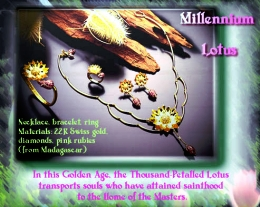

Le lotus du Millénaire Dans cet âge d'or, le lotus aux mille pétales transporte les âmes qui ont atteint la sainteté vers la Maison des Maîtres.
Collier, bracelet, boucles d'oreilles, et bague

En or suisse 22 carats, diamants, et rubis roses (de Madagascar)